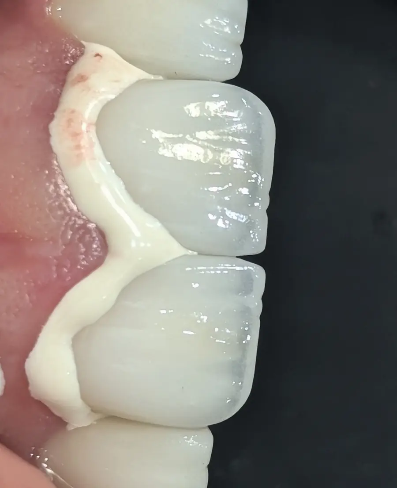
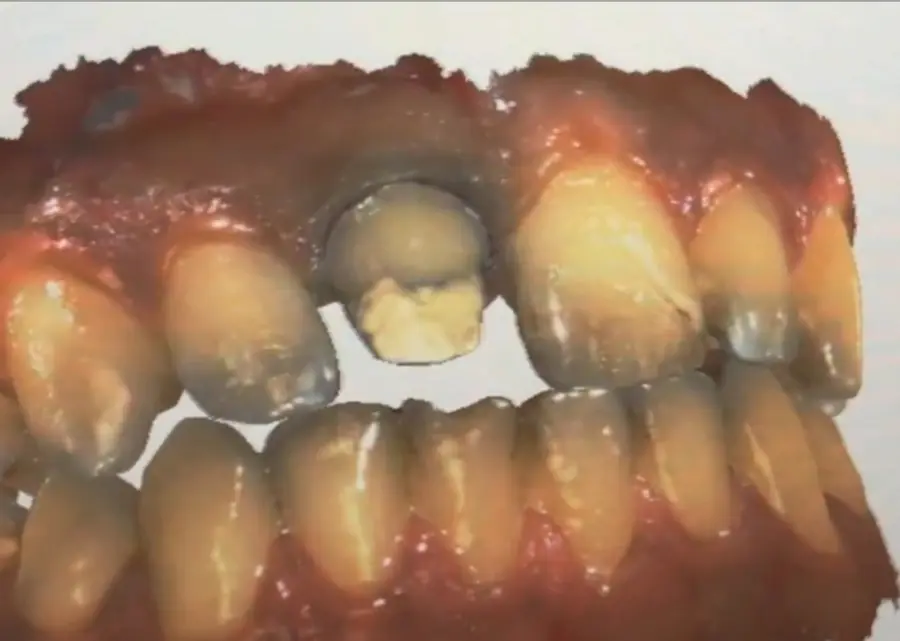

نسخه استخراجشده؛ ترجمه یا تأیید علمی انجام نشده است. وضعیت: captured
روکشهای سرامیکی (بهویژه زیرکونیا) با سمان موقت تحویل شدهاند. رنگ و شفافیت بسیار مطلوب است و بیمار از ظاهر روکش رضایت کامل دارد. نوبت سمان دائم که میرسد، رنگ نهایی روکش تغییر میکند و بیمار آن را نمیپسندد. چه اتفاقی افتاده است؟

این تغییر ظاهری معمولاً به دلیل تفاوت در اپسیتی و تون رنگی سمان دائم نسبت به سمان موقت است. در روکشهای با ضخامت کم یا ترانسلوسنسی بالا این اختلاف بیشتر خودش را نشان میدهد و حتی میتواند نتیجهی زیبایی اولیه را از بین ببرد. رنگی که بیمار در جلسهی موقت تأیید کرد، در واقع رنگ «روکش + سمان موقت» بود، نه روکش بهتنهایی.
در درمان دندان قدامی که پست، کور و روکش سرامیکی لازم دارد، بازسازی رنگ یکی از نکات کلیدی و چالشبرانگیز است. گزینههای متعددی برای پست و کور هست، از جمله پستهای پیشساخته و فایبر پست، و کورها هم در جنسهای گوناگون موجودند.

در نواحی زیبایی، کور کامپوزیتی معمولاً مشکل زیبایی ایجاد نمیکند. اما اگر پست و کور ریختگی استفاده شده باشد، احتمال بروز سایهی خاکستری از زیر روکش وجود دارد؛ مشکلی که از انتخاب ماده در مرحلهی بازسازی شروع شده، نه از لابراتوار.
کامپوزیتهای مخصوصی به نام اوپکر رنگ سفید اوپکی دارند. با پیادهسازی پروتکل باند به فلز، به کور فلزی باند میشوند و رنگ فلز را میپوشانند.
این روش به رفع تهرنگ خاکستری کمک میکند و زیبایی نهایی ترمیم را بهبود میدهد؛ بدون تعویض پست و کور.
نوع سؤال: ساخت کلمه · 2 خانه
حروف منبع: تون · رنگی